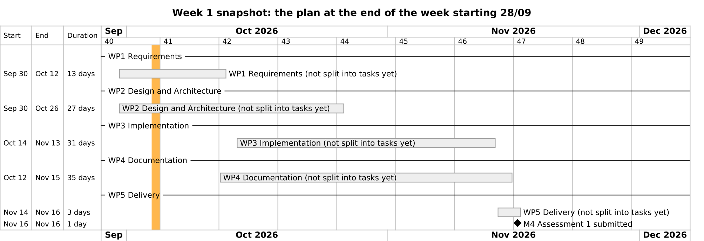
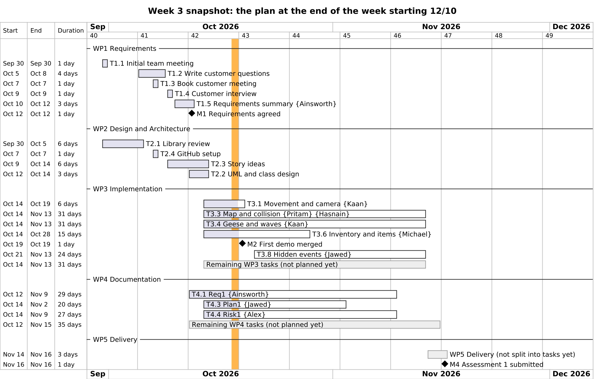
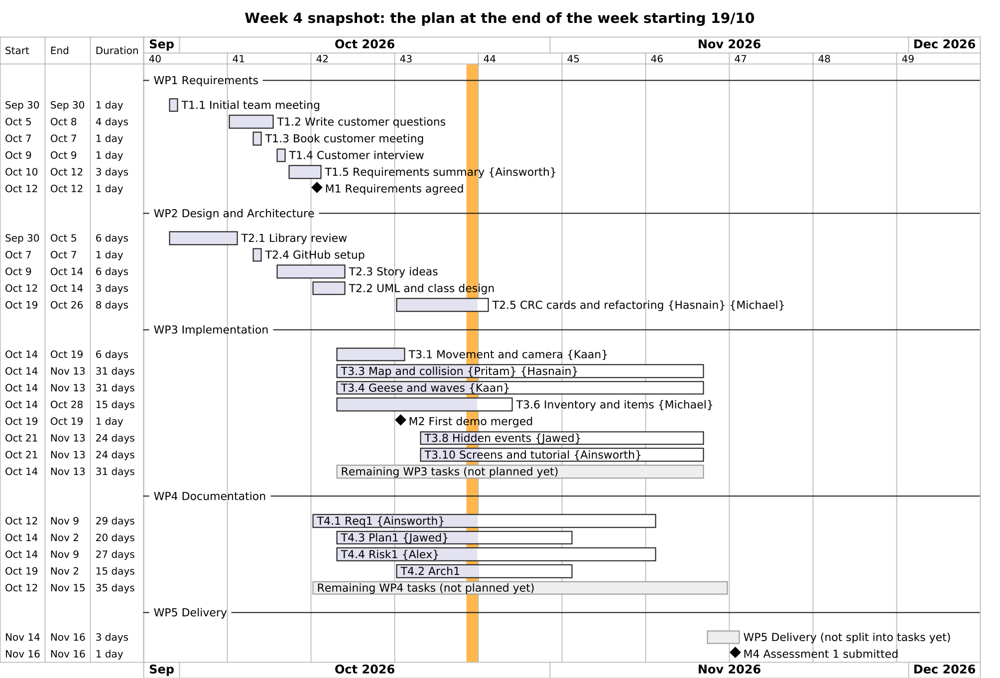
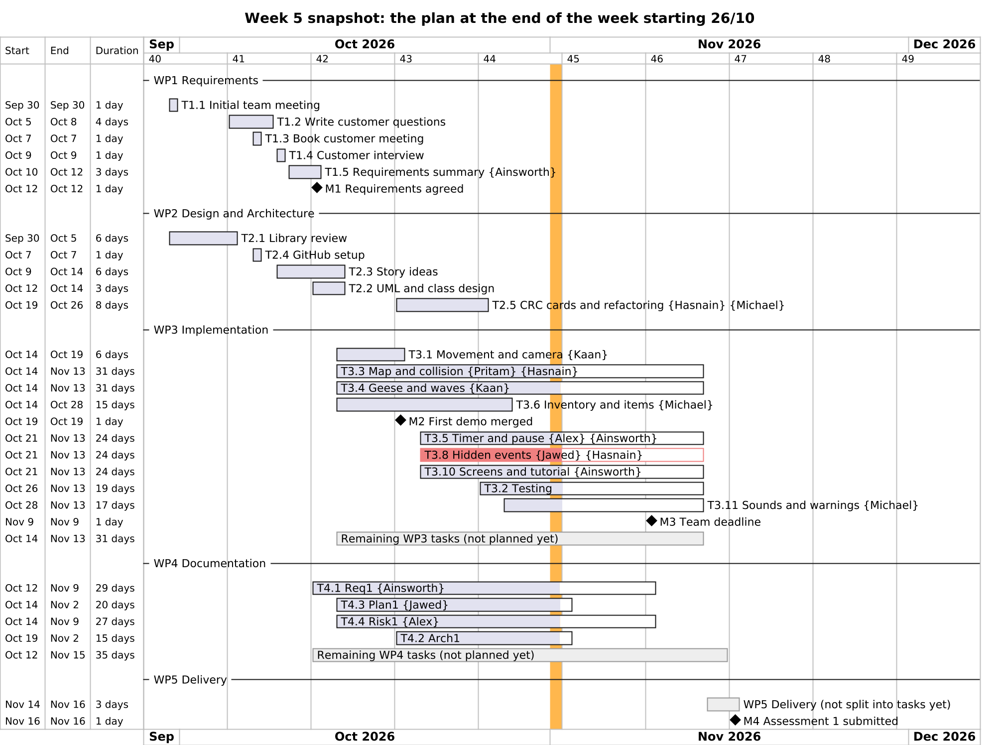
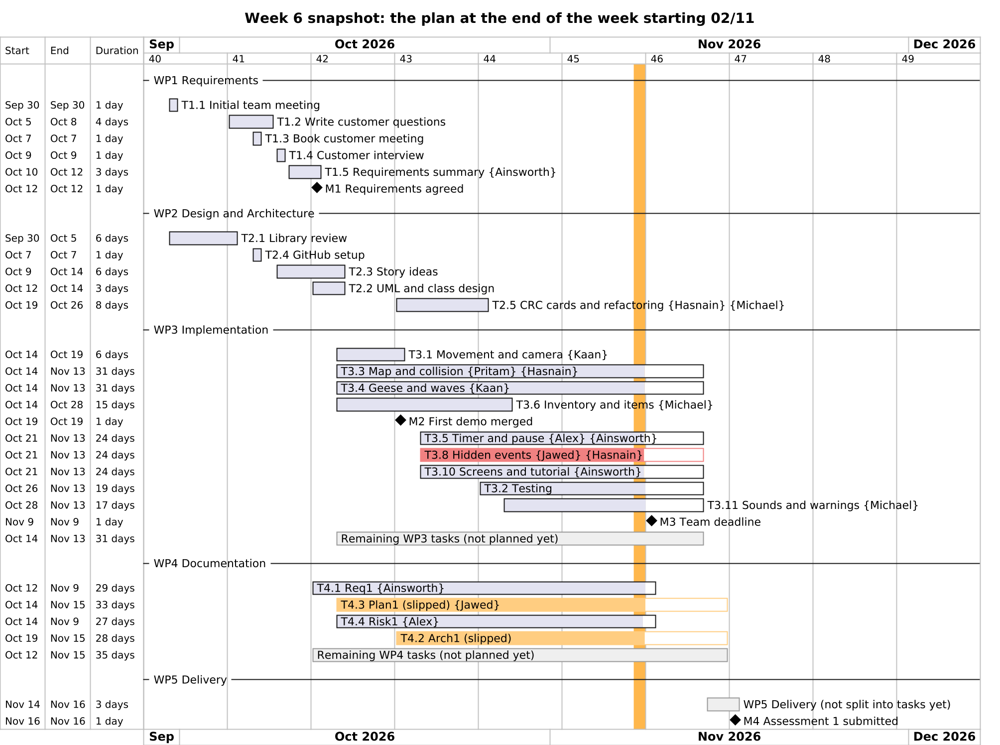

These are weekly snapshots of our project plan. The orange line marks the end of each week, and the filled part of each bar shows how far through its planned time each task was. Grey bars are work that had not been split into tasks yet. Click a chart to open it at full size.
Our original plan was high level. We had five work packages based on our draft WBS. We selected libGDX at our first meeting due to being modern and suitable for a top down game.

Based on feedback from the professor, the questions were changed to be more customer orientated. We created a GitHub early (07/10) and during the customer meeting (09/10) we learnt that we were responsible for the story of the game. This meant adding T2.3 Story ideas.

Customer responses have been summarised. Planning of work has begun to be split between people, with documentation (planning, risk, req.) and core classes (map, items, student, geese, events). The aim is to have a demo by 19/10.

The branches were merged on 19/10. CRC cards, refactoring and loading screens were added. From 21/10, the architecture was a team effort. Architecture and planning documents were to be completed by 02/11.

Jawed could not make the 26/10 and 28/10 meeting so Hasnain took over events tasks on the 28/10 (highlighted in red). Then the prototype was tested on the 29/10. The timer, pause, waves and sounds were then allocated.

No team meeting was held, and we merged the code again in an online meeting. The architecture and planning documents slipped past 02/11 (shown in orange).

On our deadline of 09/11 we were the furthest behind with the planning document. So Alex stepped in to help out Jawed. We re-planned with a priority list and incorporated integration, the implementation document, website and submission.

The final Gantt chart at the end of the project.